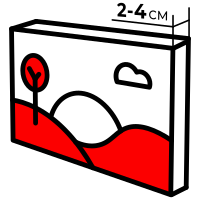
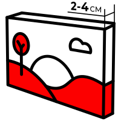

<section class="stretch">
  <div class="stretch__content section-offset container">
    <h2 class="section-title stretch__title">Виды натяжек на подрамник</h2>
    <div class="swiper stretch__slider">
      <div class="swiper-wrapper">
        <div class="swiper-slide">
          <div class="stretch__card">
            
            <p class="stretch__descr">Обычная натяжка</p>
          </div>
        </div>
        <div class="swiper-slide">
          <div class="stretch__card">
            
            <p class="stretch__descr">Студийная натяжка</p>
          </div>
        </div>
        <div class="swiper-slide">
          <div class="stretch__card">
            
            <p class="stretch__descr">Галерейная натяжка</p>
          </div>
        </div>
      </div>
    </div>
    <p class="stretch__summary">
      Стандартом является натяжка на подрамник толщиной 2 см, под который без
      труда можно подобрать багет. Для интерьерных решений в стиле лофт, кантри
      и прочих подходит подрамник с толщиной в 4 см.
    </p>
  </div>
</section>
